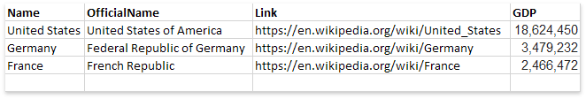
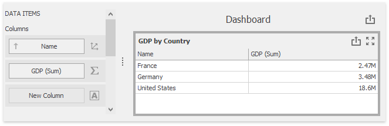
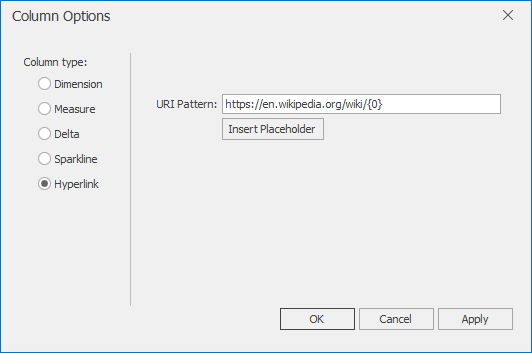
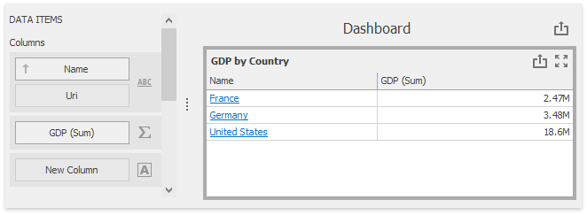

Hyperlink Column
A hyperlink column allows you to display hyperlinks in the Grid dashboard item.

You can provide hyperlinks as a separate data column. or they can be automatically created at run-time from any column using the specified URI pattern.
In this document, the sample data source contains four fields: country name, official country name, Wikipedia country page's URI and the GDP value.

The following sections describe how to create hyperlink columns in more detail:
Data Field Containing Uri Values
Drag the Name data field from the Data Source tree view to the column's data item container. The data field is automatically processed as dimension. Drag and drop the GDP data field to another column's data item container. The data field is recognized as measure and summarized.

Drop the Link field between the Name and the GDP (Sum) data items. The Grid recognizes this field as dimension and displays links as plain text.

Click the Column Type Indicator button next to the Name data item and change its type to Hyperlink.

The Grid displays column values as clickable hyperlinks allowing you to navigate to the Wiki's pages.

You can bind the Display value and URI value to different data fields. Click the New Column data item placeholder and change its type to Hyperlink.

Drag and drop the OfficialName field to the Display Value data item placeholder to display official country names. Drag and drop the Link field to the Uri data item placeholder to specify URIs.
The grid displays official country names with links obtained from the Link data source field.

Uri Pattern
In this case, a specified URI pattern is used to generate links.
Drag the Name data field from the Data Source tree view to the column's data item container. The data field is automatically processed as dimension. Drag and drop the GDP data field to another column's data item container. The data field is recognized as measure and summarized.
Click the Column Type Indicator button next to the Name data item and change its type to Hyperlink. Specify the URI Pattern option as follows:
https://en.wikipedia.org/wiki/{0}

The {0} placeholder is replaced with the Name data item value. The links are generated for country names and displayed in the grid as illustrated in the following picture.
